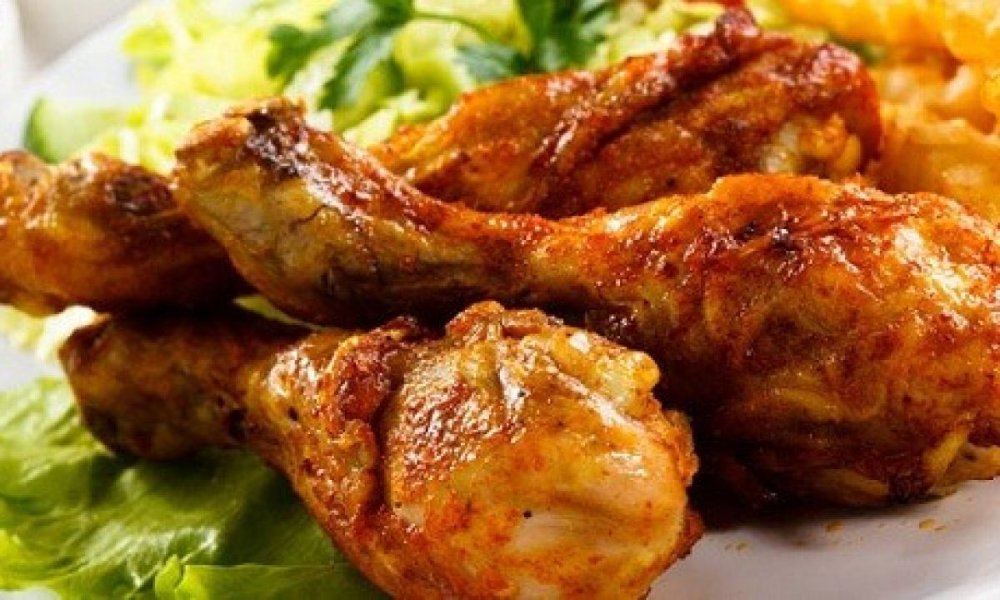

Ayam Goreng
Bahan utama:
| Ayam | 1/2 ekor | |
| Daun salam | 1 lembar | |
| Serai (memarkan) | 1 batang | |
| Penyedap rasa | secukupnya | |
| Air | 400 ml | |
| Garam | secukupnya | |
| Gula | 1/2 sdt | |
| Minyak Goreng | secukupnya |
Bumbu yang dihaluskan:
| Bawang merah | 3 siung | |
| Bawang putih | 4 siung | |
| Kunyi | 1 cm | |
| Jahe | 2 cm | |
| Kemiri | 1 butir | |
| Ketumbar | secukupnya | |
| Lengkuas | 3 cm |
Cara memasak :
- Potong dan bersihkan ayam menjadi bagian kecil.
- Tiriskan dan masukkan dalam wadah kemudian lumuri dengan air jeruk nipis.
- Haluskan semua bumbu.
- Tumis bumbu, kemudian beri sedikit air gula, garam, serai daun salam.
- Masukkan ayam ke dalam bumbu tumis tersebut, diamkan selama kurang lebih 30 menit, hingga bumbu merasuk ke dalam ayam.
- Ungkep ayam
- Tiriskan ayam yang telah diungkep, siapkan wajan untuk menggoreng
- Goreng ayam hingga berwarna kecoklatan. Ayam siap dihidangkan